Dar ðiek tiek magistrinio tema (pradþià þr. þemiau). Taigi, ðiek tiek "kûrybiðko tweakinimo" SH aproksimacijai; ðiek tiek optimizacijos pixel shader'iams, ir gana daug "kûrybiðko" poþiûrio á ðeðëlius ("plono stulpo ðeðëlio nëra? gerai - stulpas plonas, ðeðëlis nesvarbus! globalus apðvietimas uþ dykà!" :)). Rezultatas - atrodo kiek geriau, klaidø maþiau (arba jas vëlgi - kûrybiðkai paslepiam).
Kad palygint greitá ir vaizdà, ðiaip sau padariau ir standartinius shadow-depth-map ðeðëlius (floating point cubemap'as vienam ðviesos ðaltiniui). Per daug su jais neþaidþiau (taigi nepadariau nei closer-percentage filtravimo, nei nieko - dël to ir juose "laipteliai" visokie matosi).
Taigi, lyginam: virðuje standartiniai cubemap'ai, apaèioje ðitas mano gaidulis (kaip nors gudriai já galima pavadint...):
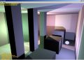
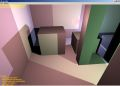
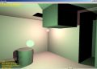
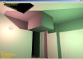
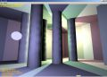
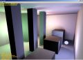
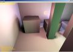
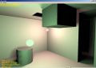
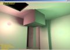
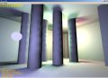
Turiu dar keletà idëjø, kaip dar kà nors "kûrybiðkai" padaryt... Reikës pabandyt :)
Kartais pagalvoju - visai gerai, kad dar uþtaikiau á laikmeèio, kol nebuvo 3D spartintuvø, galà. Turët ðioká toká supratimà, kaip ir kas "tenais" vyksta, yra visai neblogai. Dar geriau - suprasti, kodël bûtent taip kaþkas vyksta. Netgi labai paprastus dalykus geriau yra suprasti - kad nenutiktø, pvz., z-buferis ("na... panaikina nematomus daiktus!") arba bi-linear filtravimas ("ðitas gi... sulieja tekstûras!").
Èia aiðku panaðø á nostalgijà oldskool laikams... Bet kai ið tikro þinai, kad, pvz., paprasèiausiai tekstûrà ant daugiakampio rankomis uþdët yra ne taip jau paprasta (tais laikais ir masteliais netgi "labai daug skaièiavimø" tam reikëjo), tai ir 3D spartintuvams didesnë "pagarba" atsiranda, o ir ðiaip geriau.
---Manau, kad tikras (in-depth) supratimas, kaip, kas ir kodël yra daroma, reikalingas praktiðkai visur. Kadangi be programavimo nieko daugiau neiðmanau (o ir programavimo - neitin), tai pavyzdþiai bus ið to. Tarkim, dabar turi .NET, programuoji su C#, keletu kodo eiluèiø gali uþkrovinët milþiniðkus XML dokumentus arba kvietinët web servisus - tikrai atrodo, kad esi smarkiai atsiribojæs nuo þemo lygio detaliø. Bet - kaþkada ateina toks momentas, kai kas nors pradeda veikti lëtai, naudoti daug atminties ir t.t. Tada reikia kaþkaip suprasti ne tik tai, kad diiidelio XML parsinimas su DOM vien tam, kad vienà elementà paþiûrët, yra "nelabai naudingas"; ir ne tik tai, kokiø parametrø perdavimas RPC kiek atsieina.
Netgi .NET programuotojam, tarkim, reikia þinoti, kas yra "locality of reference", kaip veikia CPU keðas, kodël kartais geriau padaryti 10x daugiau operacijø tam, kad sutaupyti pusæ atminties kreipiniø (detaliau: èia ir èia). Aiðku, tai low-level detalës, kad ir koks high-level .NETas bebûtø :(
--Tas pats ir su grafika - praëjus "að nupaiðiau piramidæ! o dabar nupaiðysiu tekstûruotà piramidæ!!!" periodui, kaþkada reikia suprasti, kur ir kas "tenais" vyksta. Negali tiesiog daryt glVertex ir tikëtis, kad "OpenGL pasirûpins!" [kaþkodël daþnas dar pamini, kad "OpenGL state machine" èia yra gerai - prie ko èia "state machine", að po ðiai dienai nesuprantu]. Èia nevarau ant OpenGL - visur tas pats. Turi þinoti, kas ið tikro vyksta, ir kaip kaþkà padaryt tokiu bûdu, kuris bûtø patogiausias aparatûrai.
...atrodo, èia jau kaþkur pradedu kartotis - taigi matyt uþteks :)
Ne á temà - maþas þaislas "Kas Yra Kas Lietuvoje". Ðtai kà naudingo galima nuveikti, kol vyksta online chat'as su bosu :)
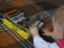 Geras knygas reikia pradët skaityt nuo maþens - ShaderX^2 pakliuvo á Martos rankas :)
Ok, tai nëra kokia nors super-fundamentali knyga (t.y. jos turbût neverta pirkt, jei "noriu 3D iðmokt!"). Bet yra tikrai neblogø dalykø. O jei dar ir uþ dykà gauni - tai negi neimsi?
Dabar reik þiûrët, ar að patsai papulsiu á ShaderX^3, ar ne... Jei labai labai greitai kà nors gero sugalvosiu, tai, þiû, dar gal ir du kartus papulsiu :)
Pastaruoju metu galvojau apie ðeðëlius, lokalø apðvietimà, sferines harmonikas ir kitoká briedà, þodþiu, apie savo magistro darbà. Sugalvojau toká dalykà: tarkim, turim statinæ scenà, ir norim dinaminiø ðviesos ðaltiniø. Taip pat norim ðeðëliø, pageidautina "minkðtø", ir nenorim naudot áprastø metodø kaip kad shadow volumes arba shadow maps.
Darom taip: daugelyje scenos pavirðiaus taðkø (virðûnëse, tarkim) apskaièiuojam ið-ten-matomo-atstumo funkcijà. T.y. funkcija (pusëje) sferos pavirðiaus, kur f-jos reikðmë - kiek ið tos vietos "matosi" ta kryptimi. Dabar, renderinant kiekvienà taðkà, reikia paþiûrët, koks atstumas ið taðko ðviesos ðaltinio kryptimi -- jei maþesnis nei atstumas iki paèio ðviesos ðaltinio, vadinasi, taðkas yra ðeðëlyje.
Problema: reikia kaþkaip saugoti tas matomo-atstumo funkcijas daugelyje taðkø. Kad taðkø daug, tai nëra labai didelë bëda (deðimt ar ðimtas tûkstanèiø, koks skirtumas :)). Bëda - kaip jas saugoti, ir dar taip, kad galëtum labai greitai rasti f-jos reikðmæ norima kryptimi. Kolkas að f-jas aproksimuoju sferinëmis harmonikomis (SH), 5-tos eilës -- taigi f-jai saugoti reikia 25 skaièiukø. Taèiau 5-tos eilës SH, sakyèiau, nelabai gerai aproksimuoja tas funkcijas :(
Kolkas rezultatas atrodo maþdaug taip (~27 tûkstanèiai virðûniø, 25 komponentø SH f-ja kiekvienai virðûnei, trys spalvoti dinaminiai ðviesos ðaltiniai,
naudoja pixel shader 2.0, veikia ~60FPS ant Radeon9800Pro, taigi lëtai):
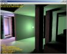
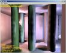
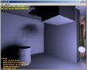
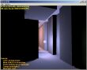
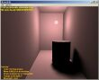
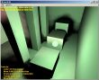
Ðeðëliai vietomis atrodo gana gerai, bet vietomis ir labai blogai :(
Taip pat, SH aproksimavimo klaidos ið arti (ðeðëlis ant sienos, ðeðëlis ant stulpo prie lempos, ðeðëlis ant grindø po lempa):
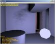
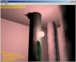
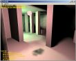
Dabar galvoju, kà èia galima bûtø padaryt. Viktoras Jucikas man sako, kad reikia naudot waveletus, mol, gal bus geriau. Bièeliai ið Stenfordo irgi naudojo waveletus ðiek tiek susijusia tema (All-Frequency Shadows Using Non-linear Wavelet Lighting Approximation), ir sako, kad tai geriau uþ SH... Tai kà, dabar man dar ir waveletus iðmokt reikia? :)
Pabaigai: ðiek tiek fun: jei tiesiog sumuoji SH koeficientus á spalvos kanalus be jokios aiðkios prieþasties, gaunasi gana graþios pastelës:
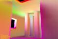
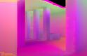
O va kaip viskas atrodo in wireframe (t.y. reikia daug virðûniø, kur laikyt matomo-atstumo f-jas):
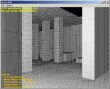
Aj, dar bandþiau pasikonsultuot su þmonëmis ið gd-algorithms konferencijos visu ðituo klausimu. Na, iðvadø jokiø nebuvo :), ir pati diskusija dar á konferencijos
archyvus, rodos, nesuplaukë -- bet jinai turëtø bûti uþ keleto dienø èia
(tema "Occlusion maps for local lights via SH?").
Kà gi - rodos, kad laimëjau ATi/Beyond3D "ðeideriø" konkursà. Netikëta, bet visai malonu :) Ðiek tiek þemiau mëtæsi paveikslëliai ir yra ið jo, t.y. demkës-ðeiderkës Shaderey - galit jà parsisiøsti ir þiûrët, jei tik ji veiks.
Kartais, kai paskaitau kokius nors þaidimø review'us, arba kokias nors diskusijas vieno ar kito þaidimo/"variklio" klausimu, vis aptinku maþdaug toká: "naudojamas Super Turbo variklis, palaikantis Tuos ir Anuos efektus ar fyèerus". Ir tai pristatoma kaip variklio "pliusas". Juokinga!
Ið principo, bet koks "variklis" tave gali tik riboti. Grafikos pavyzdys: imam plain DX9 - ir turim visas priemones, kokiomis tik galime pasiekti spartintuvà. Turim visø ámanomø technologijø palaikymà, apskritai viskà. Reiðkia, galim realizuoti bet kokius efektus ar "fyèerus". Dabar, jei pradedam ant to lipdyti "variklá", tai automatiðkai kaþkà abstrahuojam. Varikliai tam ir yra, kad tave atitolintø nuo þemo lygio detaliø, kaþkiek abstrahuotø no to, kas ið tikro vyksta, ir ðiaip palengvintø darbà. Taèiau neiðvengiamai abstrakcijos procese kaþkas prarandama - kaþko padaryt nebeiðeina (variklis neleidþia!), arba kaþkà padaryt tampa net sunkiau (reikia apeiti variklio apribojimus!). Taigi, galimybiø poþiûriu, grafinis variklis gali tik riboti.
Èia panaðu á Joel'io Law of Leaky Abstractions...
Aiðku, varikliai paslepia þemo lygio detales, ðiaip daug kà palengvina - tai gerai. Bet kai kità kartà man rodysit variklá, geriau iðvardykit jo apribojimus, o ne "kà jis palaiko" :)
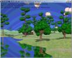
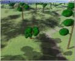
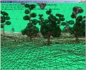
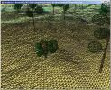
Paskutiniai - kas gi vis dëlto tai yra, galima pamatyti paveikslëliø virðuje :) Dabar - lauksim, ir þiûrësim, kas gi bus!
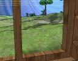
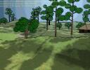
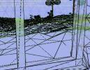
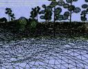
Dar keletas - atrodo gana baisiai! Ypaè wireframe'u...
Tai va, atrodo baisiai, o vyksta ten daug (na, nelabai daug) funky dalykø:
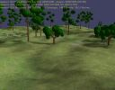 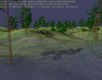 Ðiaip paveikslëlis ið to, kà ðiuo metu bandau daryti - kad ir kas tai bebûtø :)
Nieko áspûdingo - kokis tai terrain'as (apie pusë milijono trikampiø), kelios tekstûros ant jo, kaþkiek pseudo medþiø (jie turi taip atrodyti :)), ir paprasti projektuoti ðeðëliai, nuo medþiø einantys ant terrain'o. Aiðku, ðeðëliai dinaminiai - ðviesos ðaltinio kryptá galima keist kaip nori...
Sunkiausia èia padaryt, kad ðeðëliai per daug blogai neatrodytø - að naudoju vienà 1024x1024 tekstûrà visiem ðeðëliam - supaiðau á jà visus medþius, tada projektuoju ant þemës. Á tekstûrà paiðoma maþdaug tiek, kiek mato þiûrovas (ant viso terrain'o uþdëta tekstûra bûtø ryðkiai per maþos rezoliucijos), taigi jam judant plotas, kuriam "skiriamas" ðeðëlis, pastoviai keièiasi. Va èia ir iðlenda - po truputá keièiantis tam plotui, ðeðëliø pikseliai baisingai pradeda matytis (nors að ir naudoju pseudo-anti-alias ðeðëliams, t.y. paskaitau ið tekstûros keturis kartus su kiek kitomis koordinatëmis). Na, bet galø gale viskas dabar gerai - reikia tà "ðeðëliuojamà" plotà kvantuot tokiu þingsniu, kuris lygus vienam shadow map'o tekseliui. Va :)
Dar - ið antro shot'o matyt, kad terrain'as neturi jokio LOD'o (tik cull'inami gabalai, kurie á vaizdà nepatenka). Að padariau paprastà GeoMipMapping'à, bet praktiðkai kolkas jo neprireikë - kolkas daþniau visvien stabdo ne trikampiø kiekis, o pikseliø kiekis...
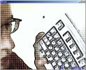 Èia ið darbo, projekto "CvFX" (ne, nVidia anei 3dfx èia neprieko :)) - toks entertainment projektas, kur stovi prieð kameras, o ið tavæs rodo "fokusus". Èia vienas ið paprastø - half-toning (ATI, GDC2003) ir edge detection, abu realizuoti viename pixel shaderyje 2.0 (galima ir senesniame, bet nebuvo reikalo). Veikia >100FPS ant paprastojo Radeon9500.
Èia að ir klaviatûra, kaip tik alt-printscreen paspaudimo momentu :)
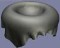 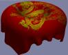 BRDF "spiria á rimtà subinæ"! Deðinëje - atlasas (satin) ir aksomas/atlasas (velvet/satin); su identiðku mesh'u ir dviem tokiais paèiais kryptiniais ðviesos ðaltiniais. Renderint tokius realiuoju laiku pigiau grybo - du maþuèiai cubemap'ai (vienà reikia du kartus dët, kità vienà) ir nieko daugiau. Ir atrodo pusëtinai, ne kaip plastmasinis Phong - mano akim þiûrint, atlasas á tikrà atlasà panaðus; o aksomo po ranka neturëjau, kad palyginti :)
Èia, jei kà, pagal McCool et al. "Homomorphic Factorizations of BRDFs for High-Performance Rendering", SigGraph 2001 (PDF). Ir, taip, èia mano bakalauro dalis - ryt ginsiuos.
Neseniai: "lietuviðkos informacijos apie 3d varikliuko programinima"... Lietuviðkos! Na jau...
Kad nëra - faktas. Kodël nëra - geras klausimas :) Matyt, nëra, nes niekam nereikia, arba niekas nemoka/tingi paraðyt. Arba (turbût tai teisingiausia) ir tas, ir tas.
----Dalykas, kuris "spiria á rimtà subinæ" DirectX9 - tai "effect framework" (ID3DXEffect ir t.t.). Naudoji - ir vargo nematai, ir praktiðkai turi viskà (kas tiesiogiai lieèia renderinimà), ko reikia. Pvz., po LTGameJam2003 kai kas ið dalyviø manæs klausinëjo "o kaip ten paiðymas vyksta? turbût labai sudëtingai?". O ið tikro ten nieko nëra, ir pats paiðymo kodas turbût kokius 5-10% viso kodo apimties sudaro, ir ten taip nuoseklu ir aiðku viskas...
Turbût (tik turbût) ID3DXEffect netinka "labai rimtiems" dalykams (na, normaliems þaidimams), bet pradþiai - super.
Kuo toliau, tuo labiau manyje stiprëja ásitikinimas, kad visi "games programmer wannabe" per daug dëmesio skiria grafikai. Að pats, beje, irgi :) Èia ypaè taip pagalvojau paskaitæs Vytauto Ðaltenio straipsnelá - ten viskas teisybë, bet pradedama nuo grafikos.
Grafika - oras; jai visai suprast reikia tik truputëlio smegenø ir netingët straipsniø skaityt (SigGraph, GDC, t.t.), kad neatsiliktum nuo gyvenimo. 3D plokðèiø veikimo principai paprasti iki bukumo, 90% visø "prijomø" ir algoritmø þinomi jau deðimtmeèius, nekurios grafinës API irgi paprastesnës nei DuKartDu. Vienu þodþiu, grafikai "daug karmos turëti" nereikia.
Kas kita yra visa likusi dalis - pirmiausia pats þaidimas, po to ðalutiniai efektai (Bus fizikos modeliavimas - koks, kodël ir kaip tai veiks? Kaip su þaidimu tinkle? Kaip ir kodël pats þaidimas bus padarytas?). Na, á ðiuos klausimus að irgi ieðkau atsakymo - jei kas nors þinot, praneðkit :) Að galiu manyt, kad þinau, kaip daroma grafika, bet kaip suþinot, kaip daromi þaidimai (arba: kaip turëtø bûti daromi þaidimai)?
----Va, pribûriau, kaip "grafika yra gaidys", tai dabar reikia vël apie 3D... Peter-Pike Sloan iðmislai (minëjau kaþkur èia jau) labai ir labai ádomu, reiktø kada nors pabandyt kà nors ta tema sukept. "Kada nors", aiðku, vël tas hipotetinis momentas - "kai bus laiko"...
Að ásivaizduoju, kad galima bûtø áprastus lightmap'us pabandyt pakeist ðitais stebuklais - tikriausiai reikëtø pagrindinæ geometrijà suskaidyt á daugiau trikampiø (bet trikampiai ðiais laikais nemokami) ir kiekvienoje virðûnëje laikyti sferiniø harmonikø koeficientus (arba CPCA skaièiukus). Tada ið esmës gautume kaþkà tarpinio tarp lightmap'ø ir per-vertex dinaminio apðvietimo. Hm, galbût tai nelabai tiktø itin maþoms patalpoms arba arti esantiems ðviesos ðaltiniams; bet turëtø tikt kokiai nors katedrai, pro kurios langus/vitraþus ðvieèia besikeièianti ðviesa :) Arba, dar geriau - iðorës scenoms.
Dar kita idëja - iðplësti tai, kà nVidia darë GeForceFX demoðkei "Ogre". Ið jø GDC2003 prezentacijos "Ogres and Fairies: Secrets of the NVIDIA Demo Team" (berods èia) galima suprast, kai kiekvienai ogro modelio virðûnei jie buvo paskaièiavæ "occlusion term" - na, jos apðviestumà. Dar tikriausiai per anksti apðviestumà (1 skaièius) pakeist sferinëm harmonikom (tarkim, 25 skaièiai), bet ta diena turbût artëja.
----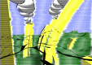 Dar viena mane persekiojanti idëja: turiu átarimà (átariu bites), kad "Bþykt" vaizdà galima iðgauti kitu, galbût geresniu, bûdu. Net nepamenu, kas sugalvojo, kaip padaryt tuos "spalvotus brûkðnius" - berods, tai buvau að :) Blogiausias dalykas su jais - kad supaiðius viskà á maþà tekstûrà, tà tekstûrà reikia atsitempti atgal ið video plokðtës, ir pagal jos pikseliø spalvas paiðyt tuos brûkðnius. Ta dalis "atsitempti atgal" ir stabdo labiausiai...
Galvoju, kad tikriausiai iðeitø supaiðius viskà á tokià pat maþà tekstûrà, vaizdà iðgaut kaip nors gudriai panaudojant pixel shader'ius. Pvz., paskaitom tà tekstûrà keliose vietose, jei spalvos skiriasi - tai, e... kaþkaip iðgaunam "perëjimà tarp brûkðniø". Panaði idëja, tik þymiai paprastesnë, kaip tik neseniai buvo vienoje ið ATI GDC2003 prezentacijø - berods Realtime 3D Scene Post-Processing. Ech - ir ðità daiktà reikia imt ir pabandyt kada nors... Kas nors þino planetà, kur paroje yra 64 valandos?
Visu smarkumu ruoðiuosiu bûsimajam GameJam#2 - visai sunku; átariu, kad ðiek tiek "per daug" uþsibrëþiau (net lygiø redaktoriø beveik baigiu padaryt - siaubas!). Neþinia, kas ið viso to gausis, bet kolkas að savim visai patenkintas, va tik kad spëèiau padaryt viskà...
Vienas áspûdingiausiø praeitø metø (2002) SigGraph straipsniø buvo "Precomputed Radiance Transfer for Real-Time Rendering in Dynamic, Low-Frequency Lighting Environments" - straipsná, slaidus ir video galima rasti èia.
Pirmas þingsnis link gero apðvietimo realiuoju laiku; raðydamas "geras" turiu omenyje ne "mes turim per-pixel specular'us ir stencil ðeðëlius" (primena DoomIII, ane?), bet kad mes turim ðviesos transporto vaizdavimà - ið ten turim ir "minkðtus" ðeðëlius, ir ðviesos atspindþius, t.t. Praktiðkai tà patá, kà gauname ir skaièiuodami radiosity. Tik kad mûsø ðviesos gali judëti ir visaip kitaip duotis. Kaip lightmap'ai, tik dinaminiam apðvietimui. Gerai!
Þiûrint á straipsná, pirma jis kala per smegenis (bent jau man taip buvo), bet kai geriau ásiskaitai (arba ilgiau paþiûri ne á straipsná, o á slaidus), tai paaiðkëja, kad visa idëja stebëtinai paprasta. Du kart du beveik :)
O, kokia pauzë buvo :)
Krapðtau po truputá GameJam#2 "variklá" ir jauèiu, kad vël darau klaidà - pradedu daryt viskà "nuo apaèios"... T.y.: padarau resursø krovimà, renderinimà, ir t.t. O tada ant to gauto "variklio" bandysiu lipdyt "þaidimo variklá".
Va èia ir átariu bites - galbût ið tikro pradët daryt nuo paèio þaidimo, ir palaipsniui sudët á "variklá" tai, ko reikia ir tokiu bûdu, kad bûtø patogu?
Dar bëda - kaip pats þemiausias sluoksnis ("grynasis variklis" - pats sugalvojau :)) daromas maþdaug ásivaizduoju... Ádomu, kaip reikëtø daryt aukðtesná - "þaidimo variklá"? T.y. kaip valdomi þaidimo veikëjai, kaip bendrauja tarpusavyje, t.t. Kas pasakys man?
Þiûrinëjau DirectX9 - visai gerai. Jis ðiek tiek per anksti iðleistas, nes uþsilikæ nemaþai klaidø (apie jas galima paskaityt DX konferencijoje), dokumentacijoje yra klaidø ir kai kas nedokumentuota. Bet ðiaip gerai - beveik kaip DX8, ir nemaþai gerø dalykø pridëta.
"Physically based modeling" kursas (èia) yra labai gerai. Super slaidai, ir super anotacijos. Visiem, kas domisi fizika/partiklais, bûtina!
Darbe kaþkaip atëjo mintis, ar tikrai greitai veikia mûsø 3d engine su visu jo OOP ir krûva abstraction layer'iø. Ir kà - realiame þaidimo pavyzdyje niekas ið paèio variklio á "daugiausia laiko uþimu" topus neáeina! Daugiausia uþima pats paiðymas - logiðka...
O dar sako, kad OOP stabdo (ar stabdo bent jau ten, kur greièio reikia)... Pas mus to OOP net per daug (abstrakcijos ant abstrakcijø... galima turbût bûtø apatinius sluoksnius ið viso iðmest, ir niekas nepastebëtø), o átakos greièiui - jokios :)
Nugirdau mintá, jog "C++ ðiek tiek populiari yra tik todël, jog Microsoft jà stengiasi prastumti. Jei taip nebûtø, tai Delphi viskà valdytø." Ádomi mintis, nieko nepasakysi :)
C++ mane vis labiau stebina. Tikrai kad su ja taip yra: pradþioj manai, kad jos nemoki, po kokiø metø manai, jog moki, o po 2-3 metø suvoki, kad në velnio tu C++ nemoki...
Greitas pavyzdys ið Spirit-Phoenix: visi þino std::for_each - jis kiekvienam konteinerio elementui vykdo kaþkokià funkcijà (t.y. paduotà funktoriaus objektà). Dabar pavyzdys: atspausdinkim visus nelygnius STL konteinerio skaièius su for_each:
for_each( c.begin(), c.end(),
if_( arg1 % 2 == 1 ) [
cout << arg1 << ' '
]
);
Stebëkit, kas pasidaro vidurinëse eilutëse - ið tos "C++ primenanèios" iðraiðkos sukonstruojamas funktoriaus objektas, kuris turi operator(), kuris savo ruoþtu spausdina lyginius argumentus! Nereikia raðyt jokios naujos klasës su "kaþkokiu ten" operatoriumi, etc. C++ naudojamas kaip funkcinio programavimo kalba!
Aiðku, galima klaust "kas ið to? mes galim paprastà for ciklà paraðyt!". Taip. Tikrai galima ciklà paraðyt. Að pats irgi nelabai suprantu funkcinio programavimo prasmæ/naudà (kolkas), bet mane vistiek labai þavi C++ kalba...
Apie tinkamà duomenø konteinerá: testavau particle sistemà: 9000 daleliø, kiekviena tik juda pastoviu greièiu, kas sekundæ "numirðta" bei yra sukuriama po maþdaug 1500 daleliø. Á GPU puèiama per AGP (kolkas nenaudojant index buferiø), fillrate neëda, viskas po AthlonXP1500+ su DDR atmintimi.
| Konteineris | FPS su viskuo | FPS atjungus visà pieðimà |
| std::list<PARTICLE*> | 105 | 172 |
| resizable pool | 162 | 395 |
| packed array | 205 | 488 |
Na, jau ið anksto aiðku, kad std::list dalelëms laikyt netinka - baisus iteravimas (keðo atþvilgiu), new/delete kiekvienai dalelei, ir t.t.
Resizable pool yra paprasto pool idëja, iðplësta iki tiek, kad pool'as nëra fiksuotos talpos ir á já sudëti objektai niekada nekeièia savo vietos atmintyje. Realizavau taip: kaip sàraðà ið paprastø pool'iukø. Na, o paprastas pool'as - tai fiksuoto dydþio masyvas objektams, ir indeksø masyvas. Pagal indeksø masyvà áterpimo ir ðalinimo greièiai yra O(1), iteravimas daugeliu atvejø irgi cache-friendly. Resizable pool atveju iteravimas yra ðiek tiek sudëtingesnis.
Packed array gi yra ið viso paprastas daiktas - tiesiog masyvas. Ðalinant kà nors ið vidurio, paskutinis elementas atkopijuojamas á kà tik paðalinto vietà. Taip niekada nebûna "skyliø", o ir keðas tiesiog dþiaugiasi, iteruojant per masyvà. Realizavau ið viso paprastai, std::vector pagalba (kas papildomai suteikia ir kintamà talpà).
...tai ðtai, kiek átakoja konteineris. Dar primeskit, kad èia yra ir kitø neoptimaliø daliø (keletas virtualiø metodø kiekvienai dalelei, etc.).
Visgi ádomu, kodël ray-tracing kai kurie þmonës laiko dievu? Kiek mano galva neða, jis tinkamas atspindþiams/refrakcijai (o ir tiems ne itin). Tu negali padaryt normalaus apðvietimo su raytraceriu. Negali caustics'ø padaryt. Negali padaryt ðvytëjimo. Na, ir taip toliau.
Taigi, kad raytraceriai yra riboti - faktas. Kad pakankamai lëti - irgi faktas. Man ádomu, kodël raytraceriø fanatai nenaudoja kito - riboto, bet greito - metodo - paprasto trikampiø pieðimo? Neþino? Nebando?
Argumentas, kad "OpenGL/D3D viskà stengiasi vaizduoti greitai", o "raytraceriai viska daro akuratniai" - nieko vertas. GL/D3D vaizduoja tekstûruotus trikampius, ir vaizduoja juos tiksliai (na, proto ribose :)) - daugiau jie nieko nedaro. Greitis yra tiesiog ðiaip, ðalutinis (bet geras) poþymis. O kuo tekstûruoti trikampiai nusileidþia spinduliø leidinëjimui? Manau, kad kaip ir niekuo... netgi galëèiau teigti, kad ámanoma su GL/D3D sugeneruot toká patá vaizdà kaip ir su Pov-Ray, tik su ðalutiniu efektu, jog veiks gerus keliasdeðimt kartø greièiau :)
Va, tik ðiandien perskaièiau Jensen "Global Illumination using Photon Maps" (gëda - taip vëlai!) - tai, IMHO, yra gerai.
O ðiaip - man rodos, kad 3D hardwarui nebeliko itin daug kliûèiø iki tikrai gero vaizdo - prieð kiek laiko vienintelë bëda buvo maþas tikslumas pikseliuose (8 bitai - nekas...), betgi dabar ir ðios bëdos nebeliko.
...tai jei viskas gerai, tai turbût nëra blogai, ane?
{kind=link}
{kind=link}
{kind=link}
{kind=link}
{kind=link}
{kind=link}
{kind=link}
{kind=link}
{kind=link}
{kind=link}
{kind=link}
{kind=link}
{kind=link}
{kind=link}
{kind=link}
{kind=link}
{kind=link}
{kind=link}
{kind=link}
{kind=link}
{kind=link}
{kind=link}
{kind=link}
{kind=link}
{kind=link}
{kind=link}
{kind=link}
{kind=link}
{kind=link}
{kind=link}
{kind=link}
{kind=link}
{kind=link}
{kind=link}
{kind=link}
{kind=link}
{kind=link}